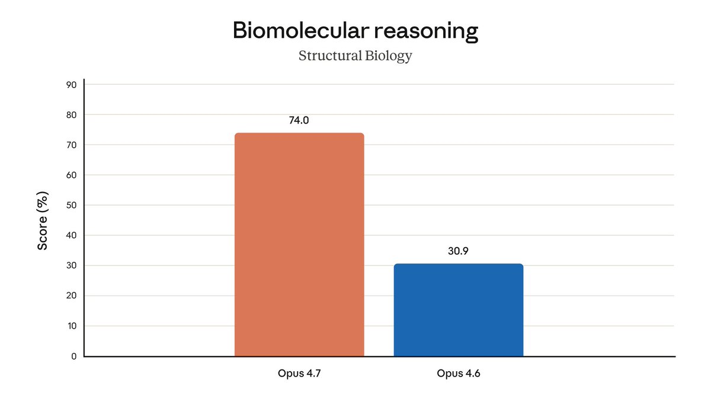
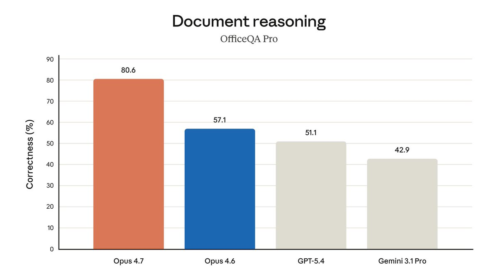

小虚空🍥
@tokerumaisurii
@two3pro @OpenAI 同样的任务token少了速度快了，那估计是因为adaptive thinking根本没给你多思考，因为换了tokenizer官方明确说了基本会导致token更多。


贾洛德森pro_🦞💎
@two3pro
Claude大招频出 昨天才优化了桌面 今天又发 Opus 4.7
同样的任务，token 明显少了，速度也快了点。毕竟效率提高了嘛 有点用gpt-5.4开⚡️的感觉
价格还跟 4.6 一样，$5/$25 per M tokens
图里那两个对比基本属实
小伙伴们有不同感觉吗？
下面有请 GPT 出牌 留给你的时间不多了 🙃
@OpenAI https://t.co/48R77ckamg https://t.co/BAUBefGnmq